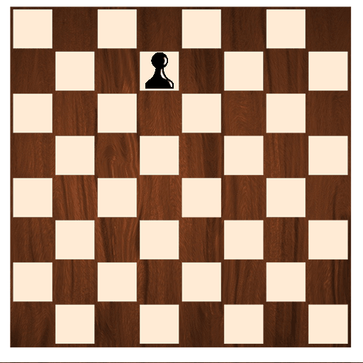

 |
|---|
El peón es la pieza más numerosa y humilde del ajedrez, pero su importancia
estratégica no debe subestimarse. Cada jugador comienza con ocho peones, que
avanzan un paso a la vez, excepto en su primer movimiento, donde pueden avanzar
dos casillas. Aunque su movimiento es limitado, los peones capturan piezas de manera
diagonal, lo que les otorga un rol ofensivo clave.
Si un peón alcanza la última fila del tablero, puede promocionar, transformándose en
cualquier pieza, generalmente en una dama, lo que lo convierte en una poderosa
herramienta para cambiar el curso de la partida. Los peones son esenciales para
controlar el centro del tablero, proteger piezas más valiosas y establecer estructuras
sólidas. ¡En sus movimientos sencillos radica una complejidad estratégica fascinante!